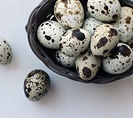

Our products:
- Coconuts
- Coconuts are native to tropical climates and can be used in many different ways. Inside the nut is white flesh which is used in both sweet and savoury dishes.
- Rice
- Rice is a type of cereal and food. In origin, it is a swamp grass. It is eaten as staple food in many parts of Asia.
- Free Range Country Eggs
- These eggs come from hens that do not live in cages and have access to natural daylight or a vegetation-covered outdoor area for at least 8 hours per day.
- True Cinnamon
- True cinnamon, comes from the inner bark of the Cinnamomum Verum plant and has been used for thousands of years in Sri Lanka.
- Coconut oil
- Coconut oil has many nutrients that can contribute to your health and to a good diet. It's full of fatty acids that your body needs and may help improve cognitive function, metabolism, and hair and skin health.
- Banana
- Bananas contain essential nutrients that may enhance heart health, help manage blood pressure, and boost a person's mood, among other benefits.
- Pineapple
- Pineapples are tropical fruits that are rich in vitamins, enzymes and antioxidants. They may help boost the immune system, build strong bones and aid indigestion. Plus, despite their sweetness, pineapples are low in calories.

- Quail eggs
- Quail eggs have the highest protein content and the lowest cholesterol of any poultry. These super-food powerhouses have immunity stimulating properties that help keep you well. They are also loaded with vitamins and minerals that help feed your health and your tastebuds!